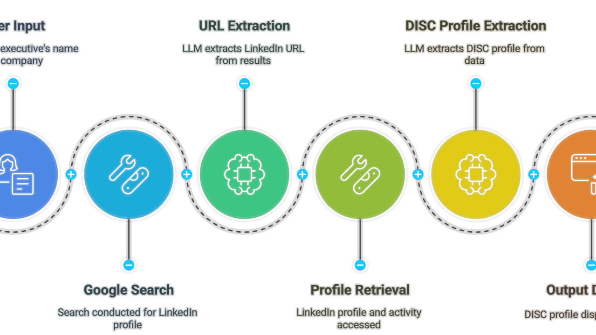
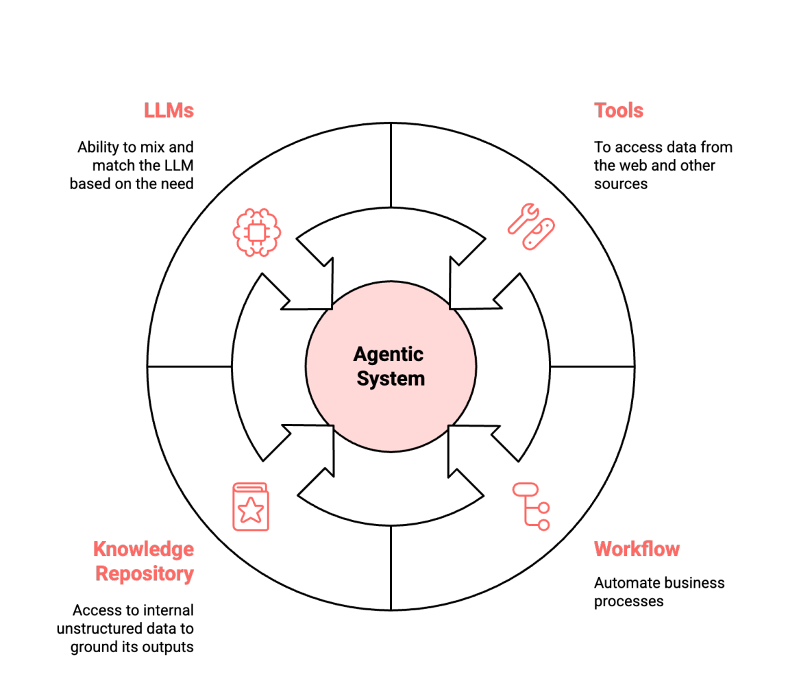
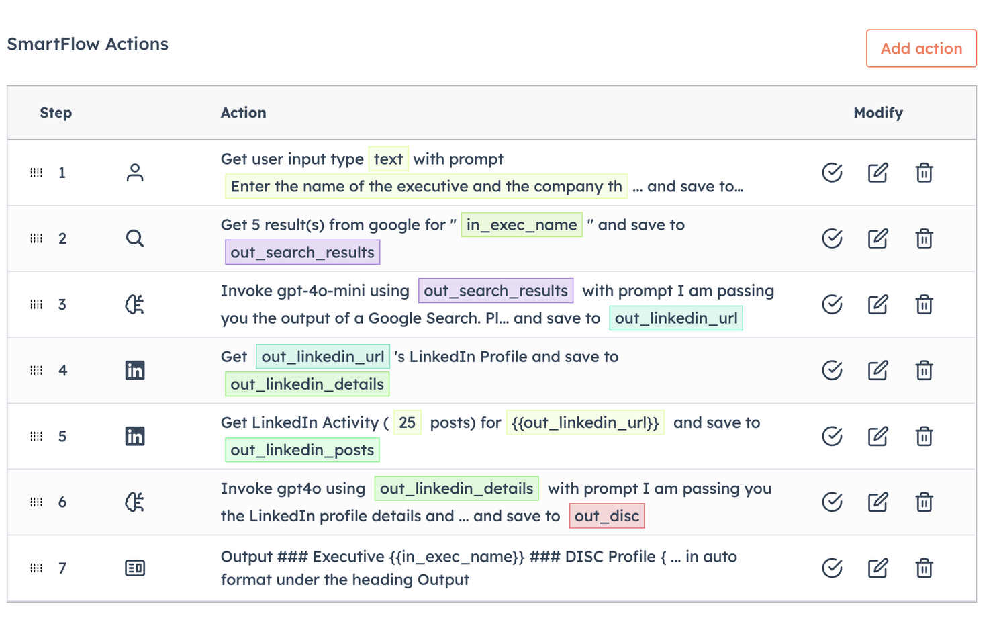
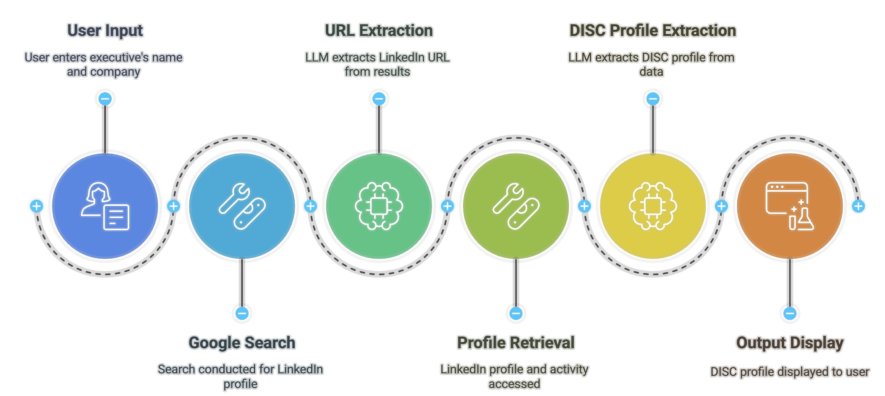
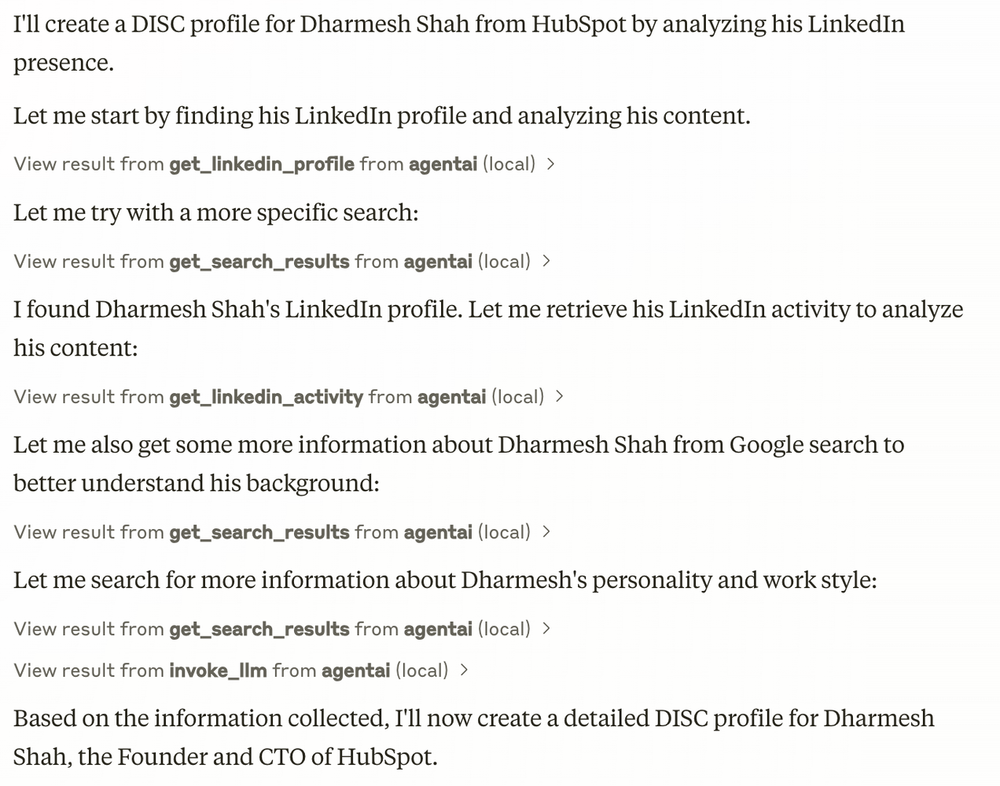
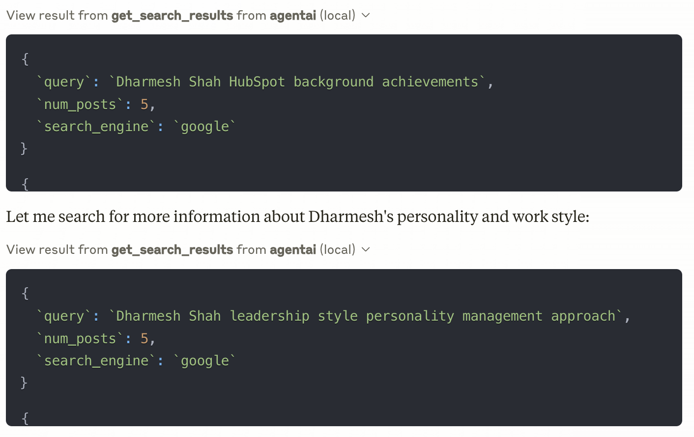

Autonomous Agents - A Multipart Series about Manus, Anthropic MCP and other related technologies is sponsored by Agent.ai - Discover, connect with and hire AI agents to do useful things.
This is my second newsletter on the topic of Autonomous Agents and my goal is to demystify them for the lay person, with real simple and practical examples that shows you these agents in action but goes behind the scenes into how they are built.
You might be asking yourself why you should care and the short answer is that these agents are coming for your salary (to borrow a quote) and it is better to be the ones building / managing these agents than those that get disrupted by them. That being said, for a lot of us, it seems so out of our reach and my goal is to show you that there is nothing stopping you from building your first agent.
My first newsletter talked about Manus, which was my wake up moment. Till then I was in denial that agents could operate autonomously in a business setting and have even written about this. I am not saying that autonomous agents are here today, but the writing is on the wall that there are going to be parts of our work that will be done by autonomous agents.
To refresh our memory let us talk about what an agent is. This visual is a simplistic way to think about it, but it is a combination of an LLM (various models) with Tools (to access data from other systems) with a knowledge repository to ground it in 'governed knowledge' and workflows to automate tasks.

Most agents I have built involve some or all of these components and I've used tools like Agent.ai to build them. Here is an example of a DISC Profile agent (one of my more popular agents on the marketplace) and how I built it

Converting the above to english. I ask the user to enter the name of the executive and the company they work for. I use that to search Google (using the Google Search tool) for their LinkedIn profile, then I use a GPT 4o-mini (LLM) to extract the LinkedIn URL from the search results, then I get their LinkedIn profile (tool) and LinkedIn activity (tool) and pass that to GPT 4o-mini (LLM) to extract their DISC profile and display it in an output.

For those who have not built an agent using Agent.ai, Beth Dunn has put together this great Getting Started course that will get you building your first agent. If you are thinking that going from building a simple agent to building a DISC profile agent is going to be a bit of a leap, I will now introduce you to Anthropic MCP.
Anthropic's Model Context Protocol (MCP) is an open standard designed to seamlessly integrate AI systems with various data sources and tools. Basically think of this as something that orchestrates all the work across all the components of an agent.
Basically imagine if you can get access to all the tools within Agent.ai in Claude Desktop and you can now build an agent by just chatting with Claude and MCP will figure out based on your prompt, which tools in Agent.ai to call (tool calling) and in the right order (workflow).
For those who are interested in setting up Agent.ai in Anthropic MCP, here is a video that takes you through the steps and here are the written instructions. A few weeks ago, when I found out that Agent.ai had made every tool available as an API endpoint, I could not understand why, but once I started using Anthropic MCP, I understand the brilliance of that strategy.
As a side note, I had tried to use OpenAI's Operator (video here) to see if it could build a DISC Profile for an executive and while it did do the job, it needed me to help it by logging into LinkedIn (which after a few times got my LinkedIn banned. Luckily I had created another LinkedIn account to test) and it was not something I could scale and share with others. That experience had given me a taste of an autonomous agent but left a lot to be desired. There was no tool calling.
Can I use Anthropic MCP with Agent.ai tools to build an autonomous agent that will take a person's name and company and generate their DISC profile by finding their LinkedIn Profile and Activities and basically follow the process listed above?
So here is the prompt I came up with - A goal with some constraints.
Generate a DISC profile for [NAME] who works at [COMPANY]. Find their LinkedIn profile, analyze their content and posts, and create a complete assessment of their personality based on the DISC framework. Don't explain the process or create documentation - just execute the analysis using Agent.ai tools and deliver the finished DISC profile with supporting evidence from their LinkedIn presence." NAME : Dharmesh Shah, COMPANY : HubspotThe test is to see if this can be used by Claude Desktop with Anthropic MCP and Agent.ai tools to replicate the workflow, tool calling and LLM activity that I had manually built with my agent.
Here is the screenshot of how this looks in Claude Desktop and a video where you can see this in action.

A few things that stand out are

This brings up a big question - Is Agent Building dead? Why should I build an agent in Agent.ai when I can just give a prompt in Claude? Is Agent.ai going to be relegated to being the underlying Tool Calling layer?
So here are the disadvantages of the Claude Desktop approach -
Bottomline, it is great as a 1 person execution engine and it is great for builders but for end users, there is a lot to be desired. The process that I am now following is to use Claude Desktop to test and debug my process and generate the documentation for the final agent, but after the testing and iteration and debugging is done (and Agent.ai is hard to debug in), I can just build an agent in Agent.ai that I can publish and share widely.
Here is a link to the documentation I have Claude generate so I have all my instructions and prompts to build an agent in Agent.ai and a video showing this whole process. Why is this so important, because you could start with a blank slate and use Claude come up with the steps to build your agent, build and debug your agent and then generate the documentation once it is all done, so you can copy it over to Agent.ai and deploy it on the marketplace.
What I will leave you with is that if you have got this far in the newsletter and you have not built an agent, you might want to get started. This is the future and it is wild!!